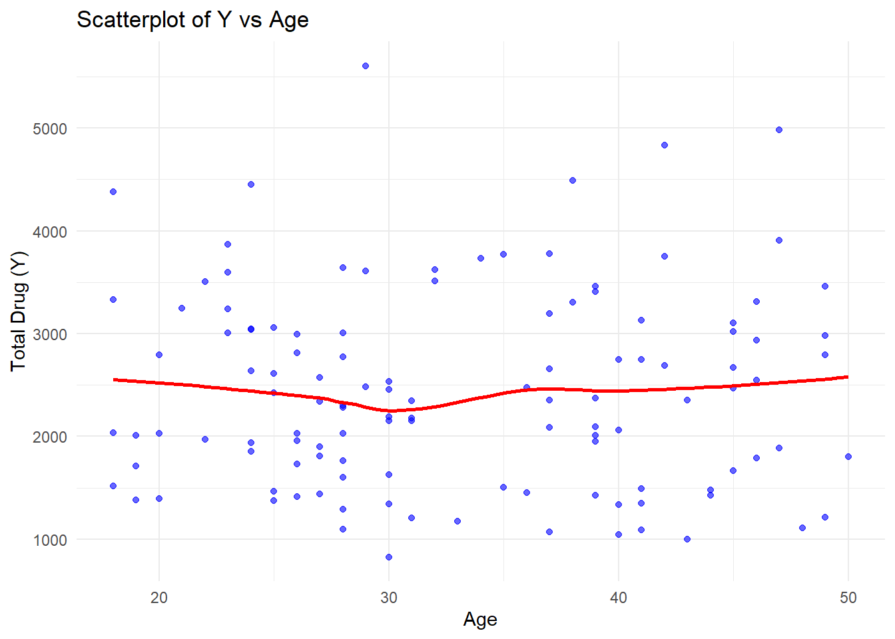

#install packages that are missing if necessary
#install.packages("tidymodels")
#install.packages("pander")
#install.packages("yardstick")
library(tidyverse)
library(readxl)
library(ggplot2)
library(tidymodels)
library(here)
library(skimr)
library(dplyr)
library(knitr)
library(pander)
library(patchwork)
library(corrplot)
library(yardstick)fitting-exercise
Model Fitting
Loading packages
loading and viewing a preview of the data
mavoglurant_data <- read.csv(here("fitting-exercise", "Mavoglurant_A2121_nmpk.csv")) #loaddatausingherefunctionsummary(mavoglurant_data) ID CMT EVID EVI2
Min. :793.0 Min. :1.000 Min. :0.00000 Min. :0.0000
1st Qu.:832.0 1st Qu.:2.000 1st Qu.:0.00000 1st Qu.:0.0000
Median :860.0 Median :2.000 Median :0.00000 Median :0.0000
Mean :858.8 Mean :1.926 Mean :0.07394 Mean :0.1613
3rd Qu.:888.0 3rd Qu.:2.000 3rd Qu.:0.00000 3rd Qu.:0.0000
Max. :915.0 Max. :2.000 Max. :1.00000 Max. :4.0000
MDV DV LNDV AMT
Min. :0.00000 Min. : 0.00 Min. :0.000 Min. : 0.000
1st Qu.:0.00000 1st Qu.: 23.52 1st Qu.:3.158 1st Qu.: 0.000
Median :0.00000 Median : 74.20 Median :4.306 Median : 0.000
Mean :0.09373 Mean : 179.93 Mean :4.085 Mean : 2.763
3rd Qu.:0.00000 3rd Qu.: 283.00 3rd Qu.:5.645 3rd Qu.: 0.000
Max. :1.00000 Max. :1730.00 Max. :7.456 Max. :50.000
TIME DOSE OCC RATE
Min. : 0.000 Min. :25.00 Min. :1.000 Min. : 0.00
1st Qu.: 0.583 1st Qu.:25.00 1st Qu.:1.000 1st Qu.: 0.00
Median : 2.250 Median :37.50 Median :1.000 Median : 0.00
Mean : 5.851 Mean :37.37 Mean :1.378 Mean : 16.55
3rd Qu.: 6.363 3rd Qu.:50.00 3rd Qu.:2.000 3rd Qu.: 0.00
Max. :48.217 Max. :50.00 Max. :2.000 Max. :300.00
AGE SEX RACE WT
Min. :18.0 Min. :1.000 Min. : 1.000 Min. : 56.60
1st Qu.:26.0 1st Qu.:1.000 1st Qu.: 1.000 1st Qu.: 73.30
Median :31.0 Median :1.000 Median : 1.000 Median : 82.60
Mean :32.9 Mean :1.128 Mean : 7.415 Mean : 83.16
3rd Qu.:40.0 3rd Qu.:1.000 3rd Qu.: 2.000 3rd Qu.: 90.60
Max. :50.0 Max. :2.000 Max. :88.000 Max. :115.30
HT
Min. :1.520
1st Qu.:1.710
Median :1.780
Mean :1.762
3rd Qu.:1.820
Max. :1.930 skim(mavoglurant_data)| Name | mavoglurant_data |
| Number of rows | 2678 |
| Number of columns | 17 |
| _______________________ | |
| Column type frequency: | |
| numeric | 17 |
| ________________________ | |
| Group variables | None |
Variable type: numeric
| skim_variable | n_missing | complete_rate | mean | sd | p0 | p25 | p50 | p75 | p100 | hist |
|---|---|---|---|---|---|---|---|---|---|---|
| ID | 0 | 1 | 858.81 | 34.08 | 793.00 | 832.00 | 860.00 | 888.00 | 915.00 | ▅▆▇▇▇ |
| CMT | 0 | 1 | 1.93 | 0.26 | 1.00 | 2.00 | 2.00 | 2.00 | 2.00 | ▁▁▁▁▇ |
| EVID | 0 | 1 | 0.07 | 0.26 | 0.00 | 0.00 | 0.00 | 0.00 | 1.00 | ▇▁▁▁▁ |
| EVI2 | 0 | 1 | 0.16 | 0.70 | 0.00 | 0.00 | 0.00 | 0.00 | 4.00 | ▇▁▁▁▁ |
| MDV | 0 | 1 | 0.09 | 0.29 | 0.00 | 0.00 | 0.00 | 0.00 | 1.00 | ▇▁▁▁▁ |
| DV | 0 | 1 | 179.93 | 226.28 | 0.00 | 23.52 | 74.20 | 283.00 | 1730.00 | ▇▂▁▁▁ |
| LNDV | 0 | 1 | 4.08 | 1.88 | 0.00 | 3.16 | 4.31 | 5.64 | 7.46 | ▃▃▇▇▅ |
| AMT | 0 | 1 | 2.76 | 10.32 | 0.00 | 0.00 | 0.00 | 0.00 | 50.00 | ▇▁▁▁▁ |
| TIME | 0 | 1 | 5.85 | 8.91 | 0.00 | 0.58 | 2.25 | 6.36 | 48.22 | ▇▁▁▁▁ |
| DOSE | 0 | 1 | 37.37 | 12.05 | 25.00 | 25.00 | 37.50 | 50.00 | 50.00 | ▇▁▁▁▇ |
| OCC | 0 | 1 | 1.38 | 0.49 | 1.00 | 1.00 | 1.00 | 2.00 | 2.00 | ▇▁▁▁▅ |
| RATE | 0 | 1 | 16.55 | 61.88 | 0.00 | 0.00 | 0.00 | 0.00 | 300.00 | ▇▁▁▁▁ |
| AGE | 0 | 1 | 32.90 | 8.87 | 18.00 | 26.00 | 31.00 | 40.00 | 50.00 | ▆▇▅▅▅ |
| SEX | 0 | 1 | 1.13 | 0.33 | 1.00 | 1.00 | 1.00 | 1.00 | 2.00 | ▇▁▁▁▁ |
| RACE | 0 | 1 | 7.41 | 21.97 | 1.00 | 1.00 | 1.00 | 2.00 | 88.00 | ▇▁▁▁▁ |
| WT | 0 | 1 | 83.16 | 12.48 | 56.60 | 73.30 | 82.60 | 90.60 | 115.30 | ▂▇▇▅▁ |
| HT | 0 | 1 | 1.76 | 0.08 | 1.52 | 1.71 | 1.78 | 1.82 | 1.93 | ▁▃▆▇▃ |
We want to visualise the data in a plot. We want to plot DV (the outcome) as a function of time, stratified by DOSE and using ID as a grouping factor.
DV_time_dose_curve <- ggplot(mavoglurant_data, aes(x = TIME, y = DV, group = ID, colour = DOSE)) + geom_line(alpha = 0.7) + labs(title = "DV vs Time by Dose", x = "Time", y = "DV", colour = "Dose")
print(DV_time_dose_curve)
There is repetiton in the data. We only want to keep observations with OCC=1. We will use the filter function.
mavoglurant_data_1 <- filter(mavoglurant_data, OCC == 1) #make a dataset with only OCC 1 rowsWe want a data frames where we have the total dose for each individual and where we exclude data where Time is zero.
DV_data <- mavoglurant_data_1 |> filter(TIME !=0) |> #removes values where TIME=0
group_by(ID) |>#Groups the data by ID so that we have all values for a single individual together
summarise(Y= sum(DV))Next we develop an additional data frames where Time is zero and join this to the previous one.
mavoglurant_time_0 <- mavoglurant_data_1 |>filter(TIME==0) #filtering for when time is zero
merged_mavoglurant <- merge(DV_data, mavoglurant_time_0, by = "ID") #using the merge function to join
print(merged_mavoglurant) ID Y CMT EVID EVI2 MDV DV LNDV AMT TIME DOSE OCC RATE AGE SEX RACE
1 793 2690.52 1 1 1 1 0 0 25.0 0 25.0 1 75 42 1 2
2 794 2638.81 1 1 1 1 0 0 25.0 0 25.0 1 150 24 1 2
3 795 2149.61 1 1 1 1 0 0 25.0 0 25.0 1 150 31 1 1
4 796 1788.89 1 1 1 1 0 0 25.0 0 25.0 1 150 46 2 1
5 797 3126.37 1 1 1 1 0 0 25.0 0 25.0 1 150 41 2 2
6 798 2336.89 1 1 1 1 0 0 25.0 0 25.0 1 150 27 1 2
7 799 3007.20 1 1 1 1 0 0 25.0 0 25.0 1 150 23 1 1
8 800 2795.65 1 1 1 1 0 0 25.0 0 25.0 1 150 20 1 88
9 801 3865.79 1 1 1 1 0 0 25.0 0 25.0 1 150 23 1 2
10 802 1761.62 1 1 1 1 0 0 25.0 0 25.0 1 150 28 1 1
11 803 2548.98 1 1 1 1 0 0 25.0 0 25.0 1 150 46 1 1
12 804 1967.61 1 1 1 1 0 0 25.0 0 25.0 1 150 22 1 1
13 805 2352.78 1 1 1 1 0 0 37.5 0 37.5 1 225 43 2 1
14 806 1800.79 1 1 1 1 0 0 37.5 0 37.5 1 225 50 2 1
15 807 2009.16 1 1 1 1 0 0 37.5 0 37.5 1 225 19 1 2
16 808 2815.26 1 1 1 1 0 0 37.5 0 37.5 1 225 26 1 2
17 809 2008.52 1 1 1 1 0 0 37.5 0 37.5 1 225 39 1 1
18 810 2933.99 1 1 1 1 0 0 37.5 0 37.5 1 225 46 1 1
19 811 2748.86 1 1 1 1 0 0 37.5 0 37.5 1 225 41 1 1
20 812 2154.56 1 1 1 1 0 0 37.5 0 37.5 1 225 30 1 1
21 813 3462.59 1 1 1 1 0 0 37.5 0 37.5 1 225 49 1 1
22 814 2771.69 1 1 1 1 0 0 37.5 0 37.5 1 225 28 1 1
23 815 2423.89 1 1 1 1 0 0 37.5 0 37.5 1 225 25 1 1
24 816 2084.87 1 1 1 1 0 0 37.5 0 37.5 1 225 37 1 1
25 817 4984.57 1 1 1 1 0 0 50.0 0 50.0 1 300 47 1 1
26 818 2572.45 1 1 1 1 0 0 50.0 0 50.0 1 300 27 1 1
27 819 2667.02 1 1 1 1 0 0 50.0 0 50.0 1 300 45 2 1
28 820 3004.21 1 1 1 1 0 0 50.0 0 50.0 1 300 28 1 1
29 821 4834.65 1 1 1 1 0 0 50.0 0 50.0 1 300 42 2 1
30 822 5606.58 1 1 1 1 0 0 50.0 0 50.0 1 300 29 1 1
31 823 3408.61 1 1 1 1 0 0 50.0 0 50.0 1 300 39 1 1
32 824 4493.01 1 1 1 1 0 0 50.0 0 50.0 1 300 38 1 1
33 825 3513.71 1 1 1 1 0 0 50.0 0 50.0 1 300 32 1 2
34 826 3905.93 1 1 1 1 0 0 50.0 0 50.0 1 300 47 1 2
35 827 3644.37 1 1 1 1 0 0 50.0 0 50.0 1 300 28 1 2
36 828 2746.20 1 1 1 1 0 0 50.0 0 50.0 1 300 40 1 2
37 829 1424.00 1 1 1 1 0 0 25.0 0 25.0 1 150 44 2 1
38 830 1108.17 1 1 1 1 0 0 25.0 0 25.0 1 150 48 2 2
39 831 3104.70 1 1 1 1 0 0 50.0 0 50.0 1 300 45 1 1
40 832 2177.20 1 1 1 1 0 0 50.0 0 50.0 1 300 31 1 88
41 833 2193.20 1 1 1 1 0 0 25.0 0 25.0 1 150 30 1 2
42 834 1810.59 1 1 1 1 0 0 25.0 0 25.0 1 150 27 1 2
43 835 1666.10 1 1 1 1 0 0 25.0 0 25.0 1 150 45 1 2
44 836 2027.39 1 1 1 1 0 0 25.0 0 25.0 1 150 20 1 1
45 837 2345.50 1 1 1 1 0 0 50.0 0 50.0 1 300 31 1 1
46 838 3310.20 1 1 1 1 0 0 50.0 0 50.0 1 300 46 1 1
47 840 3777.20 1 1 1 1 0 0 50.0 0 50.0 1 300 37 1 1
48 841 2063.43 1 1 1 1 0 0 25.0 0 25.0 1 150 40 1 2
49 842 4378.37 1 1 1 1 0 0 50.0 0 50.0 1 300 18 1 2
50 843 1853.91 1 1 1 1 0 0 25.0 0 25.0 1 150 24 1 88
51 844 3774.00 1 1 1 1 0 0 50.0 0 50.0 1 300 35 1 2
52 845 1625.46 1 1 1 1 0 0 25.0 0 25.0 1 150 30 1 2
53 846 1044.07 1 1 1 1 0 0 25.0 0 25.0 1 150 40 2 1
54 847 1423.70 1 1 1 1 0 0 25.0 0 25.0 1 150 39 1 1
55 848 3037.39 1 1 1 1 0 0 50.0 0 50.0 1 300 24 1 1
56 849 2610.00 1 1 1 1 0 0 50.0 0 50.0 1 300 25 1 1
57 850 3193.98 1 1 1 1 0 0 50.0 0 50.0 1 300 37 1 1
58 851 1602.63 1 1 1 1 0 0 25.0 0 25.0 1 150 28 1 2
59 852 2457.68 1 1 1 1 0 0 50.0 0 50.0 1 300 30 1 2
60 853 1474.60 1 1 1 1 0 0 25.0 0 25.0 1 150 44 1 1
61 854 997.89 1 1 1 1 0 0 25.0 0 25.0 1 150 43 1 1
62 855 4451.84 1 1 1 1 0 0 50.0 0 50.0 1 300 24 1 88
63 857 3507.10 1 1 1 1 0 0 50.0 0 50.0 1 300 22 1 1
64 858 3332.16 1 1 1 1 0 0 50.0 0 50.0 1 300 18 1 1
65 859 3733.10 1 1 1 1 0 0 50.0 0 50.0 1 300 34 1 2
66 860 1886.48 1 1 1 1 0 0 25.0 0 25.0 1 150 47 1 1
67 861 1175.69 1 1 1 1 0 0 25.0 0 25.0 1 150 33 1 1
68 862 1517.24 1 1 1 1 0 0 25.0 0 25.0 1 150 18 1 1
69 863 2036.20 1 1 1 1 0 0 50.0 0 50.0 1 300 18 1 2
70 864 2532.10 1 1 1 1 0 0 25.0 0 25.0 1 150 30 1 2
71 865 1392.78 1 1 1 1 0 0 25.0 0 25.0 1 150 20 1 2
72 866 2372.70 1 1 1 1 0 0 50.0 0 50.0 1 300 39 1 1
73 867 3239.66 1 1 1 1 0 0 50.0 0 50.0 1 300 23 1 1
74 868 1935.24 1 1 1 1 0 0 25.0 0 25.0 1 150 24 1 1
75 869 1344.35 1 1 1 1 0 0 25.0 0 25.0 1 150 30 1 1
76 870 1411.57 1 1 1 1 0 0 25.0 0 25.0 1 150 26 1 1
77 871 1712.00 1 1 1 1 0 0 25.0 0 25.0 1 150 19 1 1
78 872 2978.20 1 1 1 1 0 0 50.0 0 50.0 1 300 49 1 1
79 873 1948.80 1 1 1 1 0 0 50.0 0 50.0 1 300 39 1 1
80 874 1346.62 1 1 1 1 0 0 25.0 0 25.0 1 150 41 1 2
81 875 1380.61 1 1 1 1 0 0 25.0 0 25.0 1 150 19 1 1
82 876 1214.97 1 1 1 1 0 0 25.0 0 25.0 1 150 49 1 1
83 877 3622.80 1 1 1 1 0 0 50.0 0 50.0 1 300 32 1 2
84 878 3751.90 1 1 1 1 0 0 50.0 0 50.0 1 300 42 1 1
85 879 2092.89 1 1 1 1 0 0 25.0 0 25.0 1 150 39 2 88
86 880 3458.43 1 1 1 1 0 0 50.0 0 50.0 1 300 39 2 1
87 881 2789.70 1 1 1 1 0 0 50.0 0 50.0 1 300 49 2 7
88 882 2303.58 1 1 1 1 0 0 25.0 0 25.0 1 150 28 2 1
89 883 2030.50 1 1 1 1 0 0 25.0 0 25.0 1 150 26 1 88
90 884 1439.57 1 1 1 1 0 0 25.0 0 25.0 1 150 27 1 2
91 885 2471.60 1 1 1 1 0 0 50.0 0 50.0 1 300 45 1 2
92 886 1097.60 1 1 1 1 0 0 25.0 0 25.0 1 150 28 1 1
93 887 1464.29 1 1 1 1 0 0 25.0 0 25.0 1 150 25 1 1
94 888 3243.29 1 1 1 1 0 0 50.0 0 50.0 1 300 21 1 88
95 889 2654.70 1 1 1 1 0 0 25.0 0 25.0 1 150 37 1 2
96 890 3609.33 1 1 1 1 0 0 50.0 0 50.0 1 300 29 1 1
97 891 3060.70 1 1 1 1 0 0 50.0 0 50.0 1 300 25 1 2
98 892 1374.48 1 1 1 1 0 0 25.0 0 25.0 1 150 25 1 1
99 893 1451.50 1 1 1 1 0 0 25.0 0 25.0 1 150 36 2 1
100 894 1503.55 1 1 1 1 0 0 25.0 0 25.0 1 150 35 2 1
101 895 2027.60 1 1 1 1 0 0 25.0 0 25.0 1 150 28 2 2
102 896 3046.72 1 1 1 1 0 0 50.0 0 50.0 1 300 24 1 1
103 897 2485.00 1 1 1 1 0 0 50.0 0 50.0 1 300 29 1 1
104 898 1731.80 1 1 1 1 0 0 25.0 0 25.0 1 150 26 1 88
105 899 1958.27 1 1 1 1 0 0 25.0 0 25.0 1 150 26 1 1
106 900 2996.40 1 1 1 1 0 0 50.0 0 50.0 1 300 26 1 1
107 901 1288.64 1 1 1 1 0 0 25.0 0 25.0 1 150 28 1 2
108 902 2353.40 1 1 1 1 0 0 50.0 0 50.0 1 300 37 1 2
109 903 3016.30 1 1 1 1 0 0 50.0 0 50.0 1 300 45 1 1
110 905 3306.15 1 1 1 1 0 0 50.0 0 50.0 1 300 38 1 1
111 906 826.43 1 1 1 1 0 0 25.0 0 25.0 1 150 30 1 2
112 907 1338.20 1 1 1 1 0 0 25.0 0 25.0 1 150 40 1 1
113 908 1490.93 1 1 1 1 0 0 25.0 0 25.0 1 150 41 1 7
114 909 1067.56 1 1 1 1 0 0 25.0 0 25.0 1 150 37 1 1
115 910 2472.90 1 1 1 1 0 0 50.0 0 50.0 1 300 36 1 1
116 911 1085.93 1 1 1 1 0 0 25.0 0 25.0 1 150 41 1 1
117 912 2278.97 1 1 1 1 0 0 50.0 0 50.0 1 300 28 1 1
118 913 1898.00 1 1 1 1 0 0 25.0 0 25.0 1 150 27 1 2
119 914 1208.74 1 1 1 1 0 0 25.0 0 25.0 1 150 31 1 1
120 915 3593.55 1 1 1 1 0 0 50.0 0 50.0 1 300 23 1 1
WT HT
1 94.3 1.769997
2 80.4 1.759850
3 71.8 1.809847
4 77.4 1.649993
5 64.3 1.560052
6 74.1 1.829862
7 87.9 1.850107
8 61.9 1.730095
9 65.3 1.649839
10 103.5 1.840020
11 83.0 1.779870
12 68.7 1.700058
13 64.4 1.560084
14 69.8 1.640057
15 86.1 1.910054
16 84.5 1.770060
17 99.1 1.809982
18 71.2 1.669993
19 82.6 1.830179
20 85.4 1.860186
21 76.1 1.700070
22 78.3 1.719903
23 73.3 1.690144
24 102.1 1.809858
25 79.5 1.749972
26 97.5 1.849933
27 80.7 1.659881
28 83.2 1.740016
29 58.0 1.580118
30 85.7 1.770157
31 74.2 1.749948
32 70.4 1.640153
33 78.9 1.740008
34 89.3 1.689903
35 96.8 1.900156
36 74.8 1.650143
37 85.4 1.640050
38 79.5 1.620071
39 99.1 1.809982
40 88.3 1.759875
41 91.6 1.740143
42 69.2 1.810115
43 92.0 1.690046
44 80.5 1.879841
45 85.9 1.719881
46 94.5 1.779874
47 101.8 1.829941
48 102.7 1.879912
49 56.6 1.740218
50 70.7 1.780164
51 81.6 1.650067
52 90.6 1.789882
53 83.8 1.680030
54 82.1 1.810010
55 78.7 1.790083
56 79.8 1.859849
57 74.9 1.760000
58 73.2 1.729925
59 85.2 1.809879
60 90.1 1.779908
61 99.8 1.800072
62 58.4 1.660126
63 69.4 1.820068
64 73.1 1.749978
65 88.0 1.840086
66 80.3 1.699861
67 99.3 1.799946
68 96.0 1.909821
69 102.7 1.809949
70 71.4 1.679921
71 86.0 1.680014
72 89.3 1.719864
73 72.4 1.840202
74 70.4 1.740103
75 74.3 1.800082
76 102.5 1.909892
77 72.7 1.710081
78 97.3 1.800026
79 75.7 1.780081
80 81.0 1.749966
81 66.2 1.800092
82 80.9 1.810146
83 92.2 1.799898
84 92.9 1.760028
85 58.2 1.619872
86 69.8 1.520031
87 69.6 1.580004
88 62.3 1.750123
89 63.6 1.719924
90 75.1 1.850127
91 93.8 1.780146
92 85.9 1.870176
93 87.1 1.839879
94 81.9 1.770065
95 78.6 1.740039
96 68.8 1.810025
97 81.0 1.780172
98 84.6 1.710058
99 88.2 1.710089
100 90.0 1.679941
101 58.9 1.580133
102 90.1 1.799956
103 115.3 1.930120
104 72.2 1.700092
105 70.5 1.679958
106 82.1 1.780073
107 77.5 1.819881
108 99.1 1.779932
109 90.0 1.730034
110 83.4 1.819932
111 105.1 1.879883
112 97.3 1.860153
113 85.8 1.789940
114 85.4 1.820067
115 84.4 1.730002
116 77.1 1.589927
117 113.2 1.909995
118 89.0 1.829859
119 110.8 1.869859
120 96.3 1.820081summary(merged_mavoglurant) ID Y CMT EVID EVI2
Min. :793.0 Min. : 826.4 Min. :1 Min. :1 Min. :1
1st Qu.:822.8 1st Qu.:1700.5 1st Qu.:1 1st Qu.:1 1st Qu.:1
Median :853.5 Median :2349.1 Median :1 Median :1 Median :1
Mean :853.7 Mean :2445.4 Mean :1 Mean :1 Mean :1
3rd Qu.:884.2 3rd Qu.:3050.2 3rd Qu.:1 3rd Qu.:1 3rd Qu.:1
Max. :915.0 Max. :5606.6 Max. :1 Max. :1 Max. :1
MDV DV LNDV AMT TIME
Min. :1 Min. :0 Min. :0 Min. :25.00 Min. :0
1st Qu.:1 1st Qu.:0 1st Qu.:0 1st Qu.:25.00 1st Qu.:0
Median :1 Median :0 Median :0 Median :37.50 Median :0
Mean :1 Mean :0 Mean :0 Mean :36.46 Mean :0
3rd Qu.:1 3rd Qu.:0 3rd Qu.:0 3rd Qu.:50.00 3rd Qu.:0
Max. :1 Max. :0 Max. :0 Max. :50.00 Max. :0
DOSE OCC RATE AGE SEX
Min. :25.00 Min. :1 Min. : 75.0 Min. :18.00 Min. :1.000
1st Qu.:25.00 1st Qu.:1 1st Qu.:150.0 1st Qu.:26.00 1st Qu.:1.000
Median :37.50 Median :1 Median :225.0 Median :31.00 Median :1.000
Mean :36.46 Mean :1 Mean :218.1 Mean :33.00 Mean :1.133
3rd Qu.:50.00 3rd Qu.:1 3rd Qu.:300.0 3rd Qu.:40.25 3rd Qu.:1.000
Max. :50.00 Max. :1 Max. :300.0 Max. :50.00 Max. :2.000
RACE WT HT
Min. : 1.0 Min. : 56.60 Min. :1.520
1st Qu.: 1.0 1st Qu.: 73.17 1st Qu.:1.700
Median : 1.0 Median : 82.10 Median :1.770
Mean : 7.2 Mean : 82.55 Mean :1.759
3rd Qu.: 2.0 3rd Qu.: 90.10 3rd Qu.:1.813
Max. :88.0 Max. :115.30 Max. :1.930 We only kept the Time = 0 data points and so our data for time looks strange, but this is expected.
We want to delete unwanted columns, done with the select function, and also need to convert RACE and SEX to factors.
#using the select function to delete unwanted columns
merged_mavoglurant_1 <- merged_mavoglurant |> select(-OCC , -EVID, -CMT, -EVI2, -MDV, -LNDV, -ID, -AMT, -RATE) |> mutate(RACE = as.factor(RACE), SEX = as.factor(SEX))checking our data and comparing two different summaries (summary vs skim) and functions for tables (kable vs pander).
pander::pander(summary(merged_mavoglurant_1))| Y | DV | TIME | DOSE | AGE | SEX |
|---|---|---|---|---|---|
| Min. : 826.4 | Min. :0 | Min. :0 | Min. :25.00 | Min. :18.00 | 1:104 |
| 1st Qu.:1700.5 | 1st Qu.:0 | 1st Qu.:0 | 1st Qu.:25.00 | 1st Qu.:26.00 | 2: 16 |
| Median :2349.1 | Median :0 | Median :0 | Median :37.50 | Median :31.00 | NA |
| Mean :2445.4 | Mean :0 | Mean :0 | Mean :36.46 | Mean :33.00 | NA |
| 3rd Qu.:3050.2 | 3rd Qu.:0 | 3rd Qu.:0 | 3rd Qu.:50.00 | 3rd Qu.:40.25 | NA |
| Max. :5606.6 | Max. :0 | Max. :0 | Max. :50.00 | Max. :50.00 | NA |
| RACE | WT | HT |
|---|---|---|
| 1 :74 | Min. : 56.60 | Min. :1.520 |
| 2 :36 | 1st Qu.: 73.17 | 1st Qu.:1.700 |
| 7 : 2 | Median : 82.10 | Median :1.770 |
| 88: 8 | Mean : 82.55 | Mean :1.759 |
| NA | 3rd Qu.: 90.10 | 3rd Qu.:1.813 |
| NA | Max. :115.30 | Max. :1.930 |
knitr::kable(skim(merged_mavoglurant_1))| skim_type | skim_variable | n_missing | complete_rate | factor.ordered | factor.n_unique | factor.top_counts | numeric.mean | numeric.sd | numeric.p0 | numeric.p25 | numeric.p50 | numeric.p75 | numeric.p100 | numeric.hist |
|---|---|---|---|---|---|---|---|---|---|---|---|---|---|---|
| factor | SEX | 0 | 1 | FALSE | 2 | 1: 104, 2: 16 | NA | NA | NA | NA | NA | NA | NA | NA |
| factor | RACE | 0 | 1 | FALSE | 4 | 1: 74, 2: 36, 88: 8, 7: 2 | NA | NA | NA | NA | NA | NA | NA | NA |
| numeric | Y | 0 | 1 | NA | NA | NA | 2445.40733 | 961.6351038 | 826.430000 | 1700.525000 | 2349.140000 | 3050.21500 | 5606.58000 | ▆▇▆▂▁ |
| numeric | DV | 0 | 1 | NA | NA | NA | 0.00000 | 0.0000000 | 0.000000 | 0.000000 | 0.000000 | 0.00000 | 0.00000 | ▁▁▇▁▁ |
| numeric | TIME | 0 | 1 | NA | NA | NA | 0.00000 | 0.0000000 | 0.000000 | 0.000000 | 0.000000 | 0.00000 | 0.00000 | ▁▁▇▁▁ |
| numeric | DOSE | 0 | 1 | NA | NA | NA | 36.45833 | 11.8622315 | 25.000000 | 25.000000 | 37.500000 | 50.00000 | 50.00000 | ▇▁▂▁▆ |
| numeric | AGE | 0 | 1 | NA | NA | NA | 33.00000 | 8.9761589 | 18.000000 | 26.000000 | 31.000000 | 40.25000 | 50.00000 | ▅▇▃▅▅ |
| numeric | WT | 0 | 1 | NA | NA | NA | 82.55417 | 12.5211881 | 56.600000 | 73.175000 | 82.100000 | 90.10000 | 115.30000 | ▂▇▇▅▁ |
| numeric | HT | 0 | 1 | NA | NA | NA | 1.75901 | 0.0855081 | 1.520031 | 1.700087 | 1.770111 | 1.81258 | 1.93012 | ▁▃▆▇▃ |
These tables give a nice overview of the data and the small histograms for the numeric data are nice to get a very rough feel of the data.
We will generate a scatterplot to evaluate the total drug (Y) vs time.
ggplot(merged_mavoglurant_1, aes(x = TIME, y = Y)) +
geom_point(alpha = 0.6, color = "blue") + # Add scatter points
geom_smooth(method = "loess", se = FALSE, color = "red") + # Add trend line
labs(title = "Scatterplot of Y vs Time", x = "Time", y = "Total Drug (Y)") +
theme_minimal()`geom_smooth()` using formula = 'y ~ x'
Since we only kept the kept the points where time is equal to zero this scatter plot does not tell us much information about a progressing total drug vs time relationship but only shows the total drug for all participants at time zero.
We will repeat the scatterplot to evaluate the total drug (Y) vs dose.
ggplot(merged_mavoglurant_1, aes(x = DOSE, y = Y)) +
geom_point(alpha = 0.6, color = "green") + # Add scatter points
geom_smooth(method = "loess", se = FALSE, color = "red") + # Add trend line
labs(title = "Scatterplot of Y vs Dose", x = "Dose", y = "Total Drug (Y)") +
theme_minimal()`geom_smooth()` using formula = 'y ~ x'Warning in simpleLoess(y, x, w, span, degree = degree, parametric = parametric,
: pseudoinverse used at 24.875Warning in simpleLoess(y, x, w, span, degree = degree, parametric = parametric,
: neighborhood radius 25.125Warning in simpleLoess(y, x, w, span, degree = degree, parametric = parametric,
: reciprocal condition number 2.903e-16Warning in simpleLoess(y, x, w, span, degree = degree, parametric = parametric,
: There are other near singularities as well. 631.27
We now see the pattern of increasing total drug with increasing dose (as expected).
We will generate a boxplot to evaluate the total drug (Y) vs time.
ggplot(merged_mavoglurant_1, aes(x = as.factor(TIME), y = Y)) +
geom_boxplot(fill = "lightblue", alpha = 0.7) + # Boxplot
geom_jitter(alpha = 0.4, color = "black", width = 0.2) + # Add jitter points
labs(title = "Boxplot of Y by Time", x = "Time", y = "Total Drug (Y)") +
theme_minimal()
We will repeat a boxplot to evaluate the total drug (Y) vs dose.
ggplot(merged_mavoglurant_1, aes(x = as.factor(DOSE), y = Y)) +
geom_boxplot(fill = "lightgreen", alpha = 0.7) + # Boxplot
geom_jitter(alpha = 0.4, color = "black", width = 0.2) + # Add jitter points
labs(title = "Boxplot of Y by Dose", x = "Dose", y = "Total Drug (Y)") +
theme_minimal()
Using ChatGPT to generate code for plots of the distributions of variables
variables <- c("Y", "DOSE", "AGE", "SEX", "RACE", "WT", "HT")
# Function to create distribution plots
plot_distribution <- function(data, var) {
if (is.numeric(data[[var]])) {
# Numeric variables: Histogram & Density Plot
ggplot(data, aes(x = .data[[var]])) +
geom_histogram(aes(y = ..density..), bins = 30, fill = "lightblue", color = "black", alpha = 0.7) +
geom_density(color = "red", size = 1) +
labs(title = paste("Distribution of", var), x = var, y = "Density") +
theme_minimal()
} else {
# Categorical variables: Bar Plot
ggplot(data, aes(x = .data[[var]])) +
geom_bar(fill = "skyblue", color = "black", alpha = 0.7) +
labs(title = paste("Distribution of", var), x = var, y = "Count") +
theme_minimal()
}
}
# Plot distributions for each variable
plots <- lapply(variables, function(var) plot_distribution(merged_mavoglurant_1, var))Warning: Using `size` aesthetic for lines was deprecated in ggplot2 3.4.0.
ℹ Please use `linewidth` instead.# Display all plots together
library(patchwork)
wrap_plots(plots, ncol = 2)Warning: The dot-dot notation (`..density..`) was deprecated in ggplot2 3.4.0.
ℹ Please use `after_stat(density)` instead.
We get a good feel for the data for each variable here. However, because the source data is not clear we do not know what sex and race corresponds with the respective numbers. However, we can see very clear distributions favouring particular categories for these variables. The age, weight, height, and total drug (Y) data are more dispersed.
We want to look at a correlation plot of the data. We will use a correlation matrix:
# Compute correlation matrix (select only numeric variables)
cor_matrix <- merged_mavoglurant_1 |>
select(Y, DOSE, AGE, WT, HT) |>
cor(use = "pairwise.complete.obs") # Handle missing values properly
# Plot the correlation matrix
corrplot(cor_matrix, method = "color", type = "upper",
tl.col = "black", tl.cex = 0.8, addCoef.col = "black", number.cex = 0.7)This plot provides a nice overview to look at the interactions/correlations between different variables. From this, there does not seem to be much correlation between the drug data and the biological data of participants.
##Model Fitting
We need to generate some models for our tidied data. I have used chatgpt to help me to generate code.
First we fit a linear model to the total drug (Y = continuous outcome) usings DOSE as our main outcome of interest.
#We need to set a seed for reproducibility of our model
set.seed(123)
#We define the linear regression model
lm_spec_dose <- linear_reg() |>
set_engine("lm")
# Define a recipe (preprocessing steps)
lm_recipe_dose <- recipe(Y ~ DOSE, data = merged_mavoglurant_1) |>
step_normalize(all_numeric_predictors()) # Standardizes numeric predictors to account for different scales between vaariables
# Create a workflow
lm_workflow_dose <- workflow() |>
add_model(lm_spec_dose) |>
add_recipe(lm_recipe_dose)
#Fitting the model to the dataset
lm_fit_dose <- lm_workflow_dose |>
fit(data = merged_mavoglurant_1)
# View model summary
lm_fit_dose |> extract_fit_engine() |> print() |> summary()
Call:
stats::lm(formula = ..y ~ ., data = data)
Coefficients:
(Intercept) DOSE
2445.4 690.5
Call:
stats::lm(formula = ..y ~ ., data = data)
Residuals:
Min 1Q Median 3Q Max
-1284.91 -441.14 -97.22 325.84 2372.87
Coefficients:
Estimate Std. Error t value Pr(>|t|)
(Intercept) 2445.41 61.35 39.86 <2e-16 ***
DOSE 690.53 61.61 11.21 <2e-16 ***
---
Signif. codes: 0 '***' 0.001 '**' 0.01 '*' 0.05 '.' 0.1 ' ' 1
Residual standard error: 672.1 on 118 degrees of freedom
Multiple R-squared: 0.5156, Adjusted R-squared: 0.5115
F-statistic: 125.6 on 1 and 118 DF, p-value: < 2.2e-16As expected, we see a positive association between the dose and the total drug (Y), with an increase with Y for increasing units of dose.
We will now generate a plot to visualise the model fit as well (Dose vs Total drug)
ggplot(merged_mavoglurant_1, aes(x = DOSE, y = Y)) +
geom_point(alpha = 0.5, color = "blue") + # Scatterplot of actual data
geom_smooth(method = "lm", color = "red", se = TRUE) + # Regression line
labs(title = "Linear Regression: Y vs DOSE",
x = "DOSE",
y = "Total Drug (Y)") +
theme_minimal()`geom_smooth()` using formula = 'y ~ x'This confirms what we have seen in the data and would expect from these variables.
We will now compute the RMSE and R squared for this linear model looking at Total drug (Y) and Dose. The model will produce prediction values and compares these to actual values.
# Generate predictions
lm_predictions_dose <- predict(lm_fit_dose, merged_mavoglurant_1) |>
bind_cols(merged_mavoglurant_1) # Adds actual values of Y for comparison
# Compute RMSE and R²
lm_metrics_dose <- lm_predictions_dose |>
metrics(truth = Y, estimate = .pred) |>
filter(.metric %in% c("rmse", "rsq")) # Select RMSE & R²
# Print results
print(lm_metrics_dose)# A tibble: 2 × 3
.metric .estimator .estimate
<chr> <chr> <dbl>
1 rmse standard 666.
2 rsq standard 0.516Our model seems to perform moderately from this data.
We will now fit a linear model to the total drug (Y = continuous outcome) using all of the predictors. The predictors are standardised in the process to put them all on the same scale.
# Define the linear regression model
lm_spec_all_predict <- linear_reg() |>
set_engine("lm")
# Define the recipe (preprocessing steps)
lm_recipe_all_predict <- recipe(Y ~ ., data = merged_mavoglurant_1) |>
step_normalize(all_numeric_predictors()) # Standardise numeric predictors
# Create a workflow
lm_workflow_all_predict <- workflow() |>
add_model(lm_spec_all_predict) |>
add_recipe(lm_recipe_all_predict)
# Fit the model using the entire dataset
lm_fit_all_predict <- lm_workflow_all_predict |>
fit(data = merged_mavoglurant_1)Warning: ! The following columns have zero variance so scaling cannot be used: DV and
TIME.
ℹ Consider using ?step_zv (`?recipes::step_zv()`) to remove those columns
before normalizing.# View model summary
lm_fit_all_predict |> extract_fit_engine() |> print()|> summary()
Call:
stats::lm(formula = ..y ~ ., data = data)
Coefficients:
(Intercept) DV TIME DOSE AGE SEX2
2456.92 NA NA 710.96 28.32 -357.73
RACE2 RACE7 RACE88 WT HT
155.03 -405.32 -53.51 -288.57 -64.00
Call:
stats::lm(formula = ..y ~ ., data = data)
Residuals:
Min 1Q Median 3Q Max
-1480.86 -367.81 -79.95 266.15 2431.52
Coefficients: (2 not defined because of singularities)
Estimate Std. Error t value Pr(>|t|)
(Intercept) 2456.92 80.58 30.490 < 2e-16 ***
DV NA NA NA NA
TIME NA NA NA NA
DOSE 710.96 57.89 12.281 < 2e-16 ***
AGE 28.32 70.24 0.403 0.687530
SEX2 -357.73 216.93 -1.649 0.101957
RACE2 155.03 128.63 1.205 0.230650
RACE7 -405.32 448.19 -0.904 0.367768
RACE88 -53.51 244.67 -0.219 0.827296
WT -288.57 80.07 -3.604 0.000471 ***
HT -64.00 94.40 -0.678 0.499188
---
Signif. codes: 0 '***' 0.001 '**' 0.01 '*' 0.05 '.' 0.1 ' ' 1
Residual standard error: 614.3 on 111 degrees of freedom
Multiple R-squared: 0.6193, Adjusted R-squared: 0.5919
F-statistic: 22.57 on 8 and 111 DF, p-value: < 2.2e-16From these measures we once again see a strong association between dose and total drug. We now see that weight has a negative asociation with the total drug (as weight increases, Y decreases). There do not seem to be associations with age, height and race.
computing R-squared and RMSE for the linear model to the total drug and all predictors.
# Generate predictions
lm_predictions_all_predict <- predict(lm_fit_all_predict, merged_mavoglurant_1) |>
bind_cols(merged_mavoglurant_1)Warning in predict.lm(object = object$fit, newdata = new_data, type =
"response", : prediction from rank-deficient fit; consider predict(.,
rankdeficient="NA")# Compute RMSE and R-squared (and mae)
lm_metrics_all_predict <- lm_predictions_all_predict |>
metrics(truth = Y, estimate = .pred)
print(lm_metrics_all_predict)# A tibble: 3 × 3
.metric .estimator .estimate
<chr> <chr> <dbl>
1 rmse standard 591.
2 rsq standard 0.619
3 mae standard 444. Our RMSE is lower in this model which indicates slightly improved performance.
ggplot(lm_predictions_all_predict, aes(x = Y, y = .pred)) +
geom_point(alpha = 0.5, color = "blue") +
geom_abline(slope = 1, intercept = 0, color = "red", linetype = "dashed") +
labs(title = "Linear Model: Actual vs Predicted Y", x = "Actual Y", y = "Predicted Y") +
theme_minimal()
We will now fit a logistic model for sex (a categorical/binary outcome) with DOSE as the main predictor of interest.
# Define logistic regression model (SEX ~ DOSE)
log_spec_sex_dose <- logistic_reg() |>
set_engine("glm")
# Define a recipe (preprocessing steps)
log_recipe_sex_dose <- recipe(SEX ~ DOSE, data = merged_mavoglurant_1) |>
step_normalize(all_numeric_predictors())
# Create workflow
log_workflow_sex_dose <- workflow() |>
add_model(log_spec_sex_dose) |>
add_recipe(log_recipe_sex_dose)
# Fit the model
log_fit_sex_dose <- log_workflow_sex_dose |>
fit(data = merged_mavoglurant_1)computing ROC-AUC for the sex - dose logistic model and printing the results
# Use augment() to get predictions (both probabilities and classes)
log_predictions_sex_dose <- augment(log_fit_sex_dose, new_data = merged_mavoglurant_1)
# Compute ROC AUC and Accuracy
log_metrics_sex_dose <- log_predictions_sex_dose |>
roc_auc(truth = SEX, .pred_1) |>
bind_rows(
log_predictions_sex_dose |>
accuracy(truth = SEX, estimate = .pred_class)
)
# Print results
print(log_metrics_sex_dose)# A tibble: 2 × 3
.metric .estimator .estimate
<chr> <chr> <dbl>
1 roc_auc binary 0.592
2 accuracy binary 0.867The ROC-AUC i not good and indicates that there is poor discrimination (is is basically random). Thus dose is not a good predicotr of sex (as expected). Even though we see a high accurace, this is most likely due to the imbalance of sexes in the dataset.
# Generate predictions with probabilities
log_predictions_sex_dose <- predict(log_fit_sex_dose, merged_mavoglurant_1, type = "prob") |>
bind_cols(merged_mavoglurant_1)
# Plot logistic regression curve
ggplot(log_predictions_sex_dose, aes(x = DOSE, y = .pred_1)) +
geom_point(alpha = 0.4, color = "blue") + # Scatterplot of individual predictions
geom_smooth(method = "glm", method.args = list(family = "binomial"), color = "red") +
labs(title = "Logistic Regression: Probability of SEX by DOSE",
x = "DOSE",
y = "Predicted Probability of SEX") +
theme_minimal()
This curve might be misleading as it shows a positive relationship between dose and predicted probability of sex, which might be occuring due to imbalances in our data.
We will then fit a logistic model to sex using all predictors as we did with the linear model.
# Define logistic regression model (SEX ~ all predictors)
log_spec_sex_predictors <- logistic_reg() |>
set_engine("glm")
# Define recipe
log_recipe_sex_predictors <- recipe(SEX ~ ., data = merged_mavoglurant_1) |>
step_normalize(all_numeric_predictors())
# Create workflow
log_workflow_sex_predictors <- workflow() |>
add_model(log_spec_sex_predictors) |>
add_recipe(log_recipe_sex_predictors)
# Fit the model
log_fit_sex_predictors <- log_workflow_sex_predictors |>
fit(data = merged_mavoglurant_1)Warning: ! The following columns have zero variance so scaling cannot be used: DV and
TIME.
ℹ Consider using ?step_zv (`?recipes::step_zv()`) to remove those columns
before normalizing.Computing ROC-AUC for the sex - all predictors logistic model and printing the results.
# Generate predictions (both probabilities & classes)
log_predictions_sex_predictors <- augment(log_fit_sex_predictors, new_data = merged_mavoglurant_1)
# Compute ROC AUC and Accuracy
log_metrics_sex_predictors <- log_predictions_sex_predictors |>
roc_auc(truth = SEX, .pred_1) |>
bind_rows(
log_predictions_sex_predictors |>
accuracy(truth = SEX, estimate = .pred_class)
)
# Print results
print(log_metrics_sex_predictors)# A tibble: 2 × 3
.metric .estimator .estimate
<chr> <chr> <dbl>
1 roc_auc binary 0.980
2 accuracy binary 0.942Our model performed much better when looking at the other predictors as well. It had almost perfect performance at predicting sex data. Perhaps this is once again due to the skewed sex dataset and a degree of overfitting. More data points would be valauble to make sure that this is not the case and that this is based purely on the biological relationships.